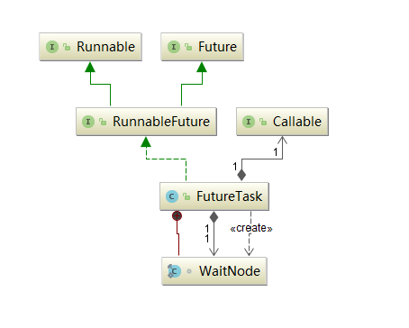

FutureTask 概述 FutureTask 为 Future 提供了基础实现，如获取任务执行结果 (get)和取消任务 (cancel)等。若任务尚未完成，获取任务执行结果时主线程将会阻塞 。
FutureTask 的线程安全由CAS来保证。
类图结构 
以上几个接口的源码如下：
1 2 3 4 5 6 7 8 9 10 11 12 13 14 15 16 17 18 @FunctionalInterface public interface Callable <V > V call () throws Exception ;}@FunctionalInterface public interface Runnable public abstract void run () public interface Future <V > boolean cancel (boolean mayInterruptIfRunning) boolean isCancelled () boolean isDone () V get () throws InterruptedException, ExecutionException ; V get (long timeout, TimeUnit unit) throws InterruptedException, ExecutionException, TimeoutException ;} public interface RunnableFuture <V > extends Runnable , Future <V > void run () }
FutureTask构造方法如下：
1 2 3 4 5 6 7 8 9 10 11 12 public FutureTask (Callable<V> callable) if (callable == null ) throw new NullPointerException(); this .callable = callable; this .state = NEW; } public FutureTask (Runnable runnable, V result) this .callable = Executors.callable(runnable, result); this .state = NEW; }
由类图和构造方法可知，FutureTask既能当做一个Runnable直接被Thread执行，也能作为Future用来得到Callable的计算结果。
ThreadPoolExecutor 线程池的好处
提供较好的性能：线程池中的线程是可复用的，不需要每次执行异步任务时都重新创建和销毁线程。
统一分配和管理：比如可以限制线程的个数、动态新增线程等。
类图结构
以上类图中主要接口的源码如下：
1 2 3 4 5 6 7 8 9 10 11 12 13 14 15 16 17 18 19 20 21 22 23 24 25 26 27 28 29 30 31 32 33 34 35 36 37 38 39 public interface Executor void execute (Runnable command) public interface ExecutorService extends Executor void shutdown () List<Runnable> shutdownNow () ; boolean isShutdown () boolean isTerminated () boolean awaitTermination (long timeout, TimeUnit unit) throws InterruptedException ; <T> Future<T> submit (Callable<T> task) ; <T> Future<T> submit (Runnable task, T result) ; Future<?> submit(Runnable task); <T> List<Future<T>> invokeAll(Collection<? extends Callable<T>> tasks) throws InterruptedException; <T> List<Future<T>> invokeAll(Collection<? extends Callable<T>> tasks, long timeout, TimeUnit unit) throws InterruptedException; <T> T invokeAny (Collection<? extends Callable<T>> tasks) throws InterruptedException, ExecutionException ; <T> T invokeAny (Collection<? extends Callable<T>> tasks, long timeout, TimeUnit unit) throws InterruptedException, ExecutionException, TimeoutException ;} public interface ScheduledExecutorService extends ExecutorService public ScheduledFuture<?> schedule(Runnable command, long delay, TimeUnit unit); public <V> ScheduledFuture<V> schedule (Callable<V> callable,long delay, TimeUnit unit) ; public ScheduledFuture<?> scheduleAtFixedRate(Runnable command,long initialDelay,long period,TimeUnit unit); public ScheduledFuture<?> scheduleWithFixedDelay(Runnable command,long initialDelay, long delay,TimeUnit unit);}
ThreadPoolExecutor原理 概述 JDK实现的线程池核心主要为两大部分：一个线程集合workerSet 和一个阻塞队列workQueue 。当用户向线程池提交一个任务时，该任务将先被放入workQueue中，workerSet中的线程会不断从workQueue中获取线程然后执行，当workQueue中没有任务时，worker就会阻塞，直至队列中又有任务了。
部分属性 1 2 3 4 5 6 7 8 9 10 11 12 13 14 15 16 17 18 19 20 21 22 23 24 25 26 27 private final BlockingQueue<Runnable> workQueue;private final HashSet<Worker> workers = new HashSet<Worker>();private int largestPoolSize;private volatile ThreadFactory threadFactory;private volatile RejectedExecutionHandler handler;private volatile long keepAliveTime;private volatile int corePoolSize;private volatile int maximumPoolSize;private final ReentrantLock mainLock = new ReentrantLock();private final Condition termination = mainLock.newCondition();private final AtomicInteger ctl = new AtomicInteger(ctlOf(RUNNING, 0 ));
线程池状态 1 2 3 4 5 6 7 8 9 10 11 12 13 14 15 16 17 18 19 20 21 22 23 private final AtomicInteger ctl = new AtomicInteger(ctlOf(RUNNING, 0 ));private static final int COUNT_BITS = Integer.SIZE - 3 ;private static final int CAPACITY = (1 << COUNT_BITS) - 1 ;private static final int RUNNING = -1 << COUNT_BITS;private static final int SHUTDOWN = 0 << COUNT_BITS;private static final int STOP = 1 << COUNT_BITS;private static final int TIDYING = 2 << COUNT_BITS;private static final int TERMINATED = 3 << COUNT_BITS;private static int runStateOf (int c) return c & ~CAPACITY; }private static int workerCountOf (int c) return c & CAPACITY; }private static int ctlOf (int rs, int wc) return rs | wc; }
线程池状态转换图如下：
线程池类型 ThreadPoolExecutor核心构造方法如下：
1 2 3 4 5 6 7 8 9 10 11 12 13 14 15 16 17 18 19 20 21 22 23 24 public ThreadPoolExecutor (int corePoolSize, int maximumPoolSize, long keepAliveTime, TimeUnit unit, BlockingQueue<Runnable> workQueue, ThreadFactory threadFactory, RejectedExecutionHandler handler) if (corePoolSize < 0 || maximumPoolSize <= 0 || maximumPoolSize < corePoolSize || keepAliveTime < 0 ) throw new IllegalArgumentException(); if (workQueue == null || threadFactory == null || handler == null ) throw new NullPointerException(); this .acc = System.getSecurityManager() == null ? null : AccessController.getContext(); this .corePoolSize = corePoolSize; this .maximumPoolSize = maximumPoolSize; this .workQueue = workQueue; this .keepAliveTime = unit.toNanos(keepAliveTime); this .threadFactory = threadFactory; this .handler = handler; }
Executors工厂类提供创建的线程池类型如下：
newFixedThreadPool：创建一个corePoolSize和maximunPoolSize都为nThreads的线程池，并且阻塞队列长度为Integer.MAX_VALUE。keepAliveTime为0说明只要有多于corePoolSize的空闲线程则回收。由于使用了无界队列，因此饱和策略失效。
1 2 3 4 5 6 7 public static ExecutorService newFixedThreadPool (int nThreads) return new ThreadPoolExecutor(nThreads, nThreads,0L , TimeUnit.MILLISECONDS,new LinkedBlockingQueue<Runnable>()); } public static ExecutorService newFixedThreadPool (int nThreads, ThreadFactory threadFactory) return new ThreadPoolExecutor(nThreads, nThreads, 0L , TimeUnit.MILLISECONDS,new LinkedBlockingQueue<Runnable>(),threadFactory); }
newSingleThreadExecutor：创建一个corePoolSize和maximunPoolSize都为1的线程池，并且阻塞队列长度为Integer.MAX_VALUE。keepAliveTime为0。
1 2 3 4 5 6 7 8 9 public static ExecutorService newSingleThreadExecutor () return new FinalizableDelegatedExecutorService (new ThreadPoolExecutor(1 , 1 , 0L , TimeUnit.MILLISECONDS,new LinkedBlockingQueue<Runnable>())); } public static ExecutorService newSingleThreadExecutor (ThreadFactory threadFactory) return new FinalizableDelegatedExecutorService (new ThreadPoolExecutor(1 , 1 ,0L , TimeUnit.MILLISECONDS,new LinkedBlockingQueue<Runnable>(),threadFactory)); }
newCachedThreadPool：创建一个按需自动创建线程 的线程池，corePoolSize为0，maximunPoolSize为Integer.MAX_VALUE，阻塞队列为SynchronousQueue。keepAliveTime为60纳秒。
该类型的特殊之处在于使用了同步阻塞队列，加入队列的任务会马上执行，同步队列中最多只能有一个任务。
1 2 3 4 5 6 7 public static ExecutorService newCachedThreadPool () return new ThreadPoolExecutor(0 , Integer.MAX_VALUE,60L , TimeUnit.SECONDS,new SynchronousQueue<Runnable>()); } public static ExecutorService newCachedThreadPool (ThreadFactory threadFactory) return new ThreadPoolExecutor(0 , Integer.MAX_VALUE,60L , TimeUnit.SECONDS,new SynchronousQueue<Runnable>(),threadFactory); }
execute方法 execute方法的作用是提交Runnable实例到线程池执行。
1 2 3 4 5 6 7 8 9 10 11 12 13 14 15 16 17 18 19 20 21 22 23 24 25 26 27 28 29 30 public void execute (Runnable command) if (command == null ) throw new NullPointerException(); int c = ctl.get(); if (workerCountOf(c) < corePoolSize) { if (addWorker(command, true )) return ; c = ctl.get(); } if (isRunning(c) && workQueue.offer(command)) { int recheck = ctl.get(); if (! isRunning(recheck) && remove(command)) reject(command); else if (workerCountOf(recheck) == 0 ) addWorker(null , false ); } else if (!addWorker(command, false )) reject(command); }
ThreadPoolExecutor的内部类Worker源码如下：
1 2 3 4 5 6 7 8 9 10 11 12 13 14 15 16 17 18 19 20 21 22 23 24 25 26 27 28 29 30 31 32 33 34 35 36 37 38 39 40 41 42 43 44 45 46 47 48 49 50 51 52 53 54 55 56 57 58 59 60 61 62 63 64 65 66 67 68 69 70 private final class Worker extends AbstractQueuedSynchronizer implements Runnable { private static final long serialVersionUID = 6138294804551838833L ; final Thread thread; Runnable firstTask; volatile long completedTasks; Worker(Runnable firstTask) { setState(-1 ); this .firstTask = firstTask; this .thread = getThreadFactory().newThread(this ); } public void run () runWorker(this ); } protected boolean isHeldExclusively () return getState() != 0 ; } protected boolean tryAcquire (int unused) if (compareAndSetState(0 , 1 )) { setExclusiveOwnerThread(Thread.currentThread()); return true ; } return false ; } protected boolean tryRelease (int unused) setExclusiveOwnerThread(null ); setState(0 ); return true ; } public void lock () 1 ); } public boolean tryLock () return tryAcquire(1 ); } public void unlock () 1 ); } public boolean isLocked () return isHeldExclusively(); } void interruptIfStarted () Thread t; if (getState() >= 0 && (t = thread) != null && !t.isInterrupted()) { try { t.interrupt(); } catch (SecurityException ignore) { } } } }
由源码可知，Worker继承自AQS并实现了Runnable接口，是具体承载任务的对象。Worker类实现了简单的不可重入独占锁，state=0表示锁未被获取状态，state=1表示锁已经被获取，state=-1是创建Worker实例默认的状态。
addWorker与runWorker方法源码分析（有空再看）。
sumbit方法 sumbit方法在ThreadPoolExecutor的父抽象类AbstractExecutorService中实现，Runnable或Callable对象被封装为FutureTask对象传入execute方法，最终执行的是FutureTask的run方法。
1 2 3 4 5 6 7 8 9 10 11 12 13 14 15 16 17 18 19 20 21 22 23 24 25 26 27 public Future<?> submit(Runnable task) { if (task == null ) throw new NullPointerException(); RunnableFuture<Void> ftask = newTaskFor(task, null ); execute(ftask); return ftask; } public <T> Future<T> submit (Runnable task, T result) { if (task == null ) throw new NullPointerException(); RunnableFuture<T> ftask = newTaskFor(task, result); execute(ftask); return ftask; } public <T> Future<T> submit (Callable<T> task) { if (task == null ) throw new NullPointerException(); RunnableFuture<T> ftask = newTaskFor(task); execute(ftask); return ftask; } protected <T> RunnableFuture<T> newTaskFor (Runnable runnable, T value) { return new FutureTask<T>(runnable, value); } protected <T> RunnableFuture<T> newTaskFor (Callable<T> callable) { return new FutureTask<T>(callable); }
shutdown与shutdownNow
shutdown方法：调用后线程池状态变为SHUTDOWN，此时拒绝新任务但是处理阻塞队列中的任务。
shutdownNow方法：调用后线程池状态变为STOP，此时拒绝新任务并抛弃阻塞队列中的任务，同时中断（设置中断标记）正在处理的任务。
awaitTermination方法 当线程调用该方法后会被阻塞，直到线程池状态变为TERMINATED才返回，或者等待时间超时才返回。
为什么不建议使用Executors创建线程池？ 阿里巴巴Java开发手册并发处理部分中，不允许使用 Executors 创建线程池，而是通过 ThreadPoolExecutor 的构造方法，这样的处理方式让写的同学更加明确线程池的运行规则，规避资源耗尽的风险。
ScheduledThreadPoolExecutor ScheduledThreadPoolExecutor内部使用DelayQueue来存放任务。
schedule 1 2 3 4 public ScheduledFuture<?> schedule(Runnable command,long delay,TimeUnit unit) {} public <V> ScheduledFuture<V> schedule (Callable<V> callable, long delay,TimeUnit unit)
该方法的作用是提交一个延迟执行的任务。从提交时间算起，delay时间后开始执行任务，unit为delay的时间单位。任务只执行一次。
scheduleWithFixedDelay 1 public ScheduledFuture<?> scheduleWithFixedDelay(Runnable command,long initialDelay,long delay,TimeUnit unit) {}
该方法的作用是，当任务执行完毕后，让其延迟固定时间后再次运行(fixed-delay任务)。
initialDelay表示提交任务后延迟多少时间开始执行任务command，delay表示当任务初次执行完毕后延迟多少时间后再次运行command任务，unit是initialDelay和delay的时间单位。任务会一直重复运行，直到任务运行抛出异常、被取消了、或者关闭了线程池。
scheduleAtFixedRate 1 public ScheduledFuture<?> scheduleAtFixedRate(Runnable command,long initialDelay,long period,TimeUnit unit) {}
fixed-rate任务的执行规则为：从提交时间算起，在时间点为initialDealy+n*period(n = 0, 1, 2, 3…)的时刻执行任务。若前一次任务还没执行完毕，下一次任务的执行时刻就到了，则下次任务要等到前一次任务执行完毕后才执行。
具体执行流程为：当任务提交后，initialDelay时间后执行command，然后在initialDelay+period时刻再次执行，而后在initialDelay+2*period时刻再次执行，循环往复，直到抛出异常、调用了任务的cancel方法取消了任务或关闭了线程池。
Fork/Join Fork/Join框架是Java并发工具包中的一种可以将一个大任务拆分为很多小任务来异步执行的工具，自JDK1.7引入。
待后续补充。